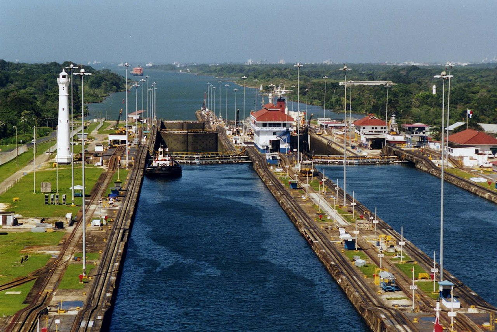
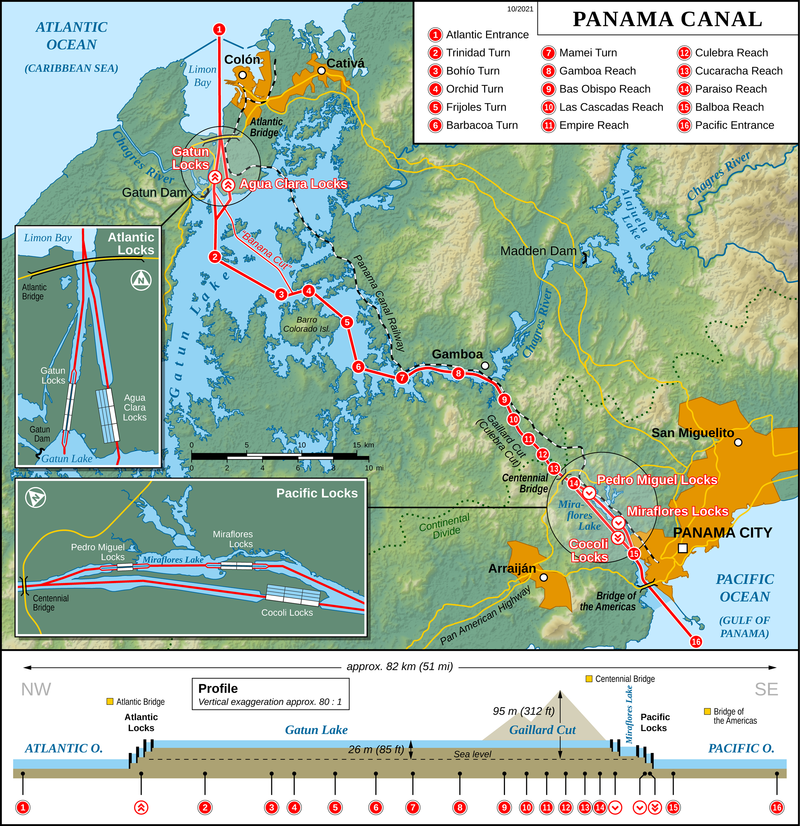

Панамський канал — судноплавний канал, що сполучає Панамську затоку Тихого океану з Карибським морем і
Атлантичним океаном, розташований на Панамському перешийку на території держави Панама.
Внаслідок посухи у Панамі та пересихання Панамського каналу у серпні 2023 року утворилися величезні черги, і АПК
на рік ввела обмеження на проходження суден.

Технічні особливості
Довжина — 81,6 км, зокрема 65,2 км сушею і 16,4 км дном Панамської та Лімонської бухт (для проходу суден
глибокою водою).
Будівництво Панамського каналу стало одним із найбільших і надскладних будівельних проектів, здійснених
людством. Панамський канал здійснив неоціненний вплив на розвиток судноплавства і економіки в Західній півкулі і
на всій Землі в цілому, що зумовило його надзвичайно високе геополітичне значення. Завдяки Панамському каналу
морський шлях із Нью-Йорка до Сан-Франциско скоротився з 22,5 тис.км до 9,5 тис. км.
Історія
Первинний задум будівництва каналу, що сполучає два океани, відноситься до XVI століття.
Проте,
перший
інженерний розрахунок цього каналу зробив українець Скибицький Михайло Карлович. Перша спроба
будівництва
судноплавного шляху на Панамському перешийку датується лише 1879. У Франції була створена «Загальна компанія
міжокеанського каналу», акції якої придбало більше 800 тисяч людей. До 1888 на будівництво каналу було витрачено
майже в 2 рази більше коштів, ніж передбачалося, а виконано було тільки третину робіт. Компанія збанкрутіла, що
спричинило розорення тисяч дрібних власників акцій. Подальше розслідування виявило факти масової корупції,
підкупу компанією посадових осіб, редакторів газет. Ця авантюра отримала назву Панамської, а слово «панама»
стало синонімом афери, шахрайства. Засновник «Загальної компанії міжокеанського каналу» французький інженер і
дипломат Фердинанд де Лессепс і його син Шарль в лютому 1893 року були засуджені до п'яти років ув'язнення.
Конструкція каналу
Завдяки S-подібній формі Панамського перешийка, Панамський канал направлений з південного сходу (сторона Тихого
океану) на північний захід (Атлантичний океан). Канал складається з двох штучних озер, сполучених каналами і
поглибленими руслами річок, а також із двох груп шлюзів. З боку Атлантичного океану трикамерний шлюз «Gatun»
сполучає Лімонську бухту з озером Гатун. З боку Тихого океану двокамерний шлюз «Miraflores» і однокамерний шлюз
«Pedro Miguel» сполучають Панамську бухту з руслом каналу.

Сучасний стан
З моменту відкриття каналу минуло близько ста років, але канал і досі користується великим попитом. Хоча
світовий ринок морських перевезень і розміри самих кораблів помітно змінилися відтоді, як канал був створений,
він продовжує бути важливою ланкою у світовій торгівлі, проводячи більше вантажів, ніж раніше, з меншими
накладними витратами. Однак, канал стикається з низкою потенційних проблем.
Ефективність та технічне обслуговування
Існували побоювання, що ефективність і технічне обслуговування каналу постраждають після передачі США каналу
Панамі, однак, все сталося не так. Розроблені і введені в дію американцями операції на каналі, під контролем
Панами тільки вдосконалюються. Водний Час Каналу (ВЧК), — середній час, необхідний для переходу судна
каналу, включаючи час очікування, — є ключовим показником ефективності. Згідно з даними адміністрації
Панамського каналу (АПК), починаючи з 2000 року, він коливався між 20 і 30 годинами. Кількість нещасних випадків
також помітно не змінилася за останнє десятиліття, коливаючись між 10 і 30 нещасними випадками щороку на,
приблизно, 14 000 проходів суден через канал за рік. Офіційно трапився лише один випадок, коли було потрібне і
проводилися офіційне розслідування.
Пропускна здатність
Канал наразі обробляє більший потік суден, ніж коли-небудь передбачали його будівельники. У 1934 році було
підраховано, що максимальна пропускна здатність каналу складе близько 80 млн. тон на рік; як вже зазначалося
вище, товарообіг каналу в 2009 році склав 299 100 000 тон морських перевезень.
Конкуренція
Незважаючи на привілейоване становище протягом багатьох років, канал все частіше стикається з конкуренцією з
боку інших регіонів. Очікують, що збори за прохід каналом виростуть, а деякі критики[21] припускають, що
Суецький канал, може стати реальною альтернативою для вантажопотоку між Азією та східним узбережжям США.
Панамський канал, однак, продовжує служити більше ніж для 144 торговельних маршрутів світу і більшість
вантажообігу каналу припадає на маршрути між Азією та Східним та Карибським узбережжями США.
Проблеми водних ресурсів
Озеро Гатун наповнюється дощовою водою, і озеро накопичує надлишок води у вологі місяці. Води в океан
витрачається в обсязі
101.000 кубічних метрів на один цикл роботи шлюзів зверху вниз. Так як судна спочатку йдуть вгору до озера
Гатун, а потім спускаються, одне проходження потребує в два рази більше води, але той же цикл може бути
використаний для іншого судна, що проходить в протилежному напрямку. Занурений об'єм судна не впливає на
кількість води. Під час сухого сезону, коли менше опадів, в озері Гатун спостерігається дефіцит води.
Розбудова каналу
23 жовтня 2006 року в Панамі були підбиті підсумки референдуму про розширення Панамського каналу, яке підтримали
79% населення. З 2007 року почалась його розбудова. В 2016 році його модернізація завершилася, пропускна
спроможність шлюзів зросла. Замість 34 метрів ширини та 305 метрів довжини — шлюзові камери мають 55 м ширини та
427 м довжини. А осадка суден «пост-панамського класу» (глибина шлюзів) зросла з 12,04 м до 15,2 м.